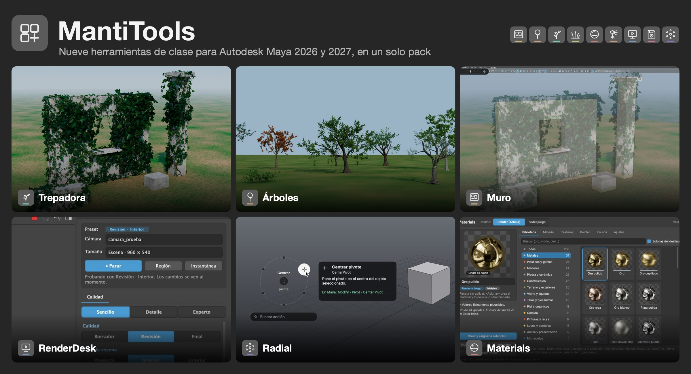
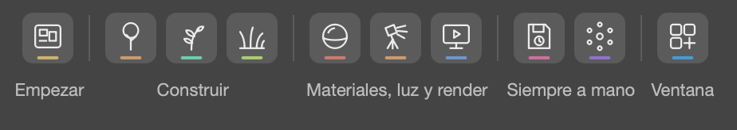

Wiki de MantiTools
MantiTools junta en un solo pack nueve herramientas de clase para Autodesk Maya 2026 y 2027: un menú, un estante con un icono por herramienta y una ventana central con todos los ajustes. Esta wiki es su manual completo: cómo se instala, cómo se trabaja una escena de principio a fin y qué hace cada botón de cada herramienta.


Pulsa la tecla / en cualquier página para buscar en toda la wiki. Funciona sin conexión: es la misma que abre MantiTools → Documentación (wiki) dentro de Maya.
Las herramientas#
Están en el orden del estante, que es el orden en el que se trabaja una escena: primero las referencias, luego se construye el entorno, después el aspecto (materiales, luz y render) y, siempre a mano, guardar y el menú rápido.
| Herramienta | Para qué sirve | Grupo del estante | |
|---|---|---|---|
| Muro | Tablero de referencias y notas dentro de Maya, con fantasma sobre el visor. | Empezar | |
| Árboles | Editor modular de árboles y biblioteca para plantar un jardín. | Construir | |
| Trepadora | Hiedra y enredaderas que crecen sobre cualquier malla, con hojas instanciadas. | Construir | |
| GrassEditor | Hierba por capas, con pincel, tipos y control de rendimiento. | Construir | |
| Materials | Biblioteca de materiales OpenPBR con ida y vuelta a Substance Painter. | Materiales, luz y render | |
| LightManager | Luces de Arnold en pasos y Kelvin: estudio, interiores, exteriores y sol por hora. | Materiales, luz y render | |
| RenderDesk | Panel de render de Arnold: presets que se combinan, historial A/B y render final en segundo plano. | Materiales, luz y render | |
| SimpleSave | Versiones con nota y miniatura, autoguardado y recuperación. | Siempre a mano | |
| Radial | Menú radial o pill con doble Tab, configurable y con buscador de órdenes. | Siempre a mano |


Por dónde empezar#
- Instalación: arrastra
instalar.pyal visor de Maya. Dos minutos. - Primeros pasos: el menú, el estante y la ventana central en cinco minutos.
- Flujo de trabajo: una escena completa, de la referencia al render final, usando todas las herramientas.
- La página de la herramienta que vayas a usar. Cada una tiene un tutorial paso a paso, la explicación de todos sus controles, sus ajustes y sus problemas frecuentes.
Qué tiene de especial el pack#
- Un solo instalador. Un archivo
.modda a Maya todas las herramientas. Si ya tenías alguna instalada por separado, se aparta sin borrar nada. - Todo en el mismo sitio. Un menú con un submenú por herramienta, un estante ordenado por fases de trabajo y una ventana con los ajustes de todas.
- Mismo aspecto en todas. Comparten botones, colores y tipografía, y los materiales que crean (Trepadora, Árboles, Materials) son openPBRSurface, el material estándar de Maya 2026 y 2027. Más en Materiales OpenPBR.
- Pensado para clase. Una carpeta de clase permite al profesor compartir materiales y botones, desactivar herramientas y fijar ajustes para todo el grupo.
- Español e inglés. El idioma se cambia para todas a la vez en Ajustes → General.
- Libre. Licencia MIT. El código de cada herramienta está en su propio repositorio de GitHub.
Requisitos#
| Maya | 2026 o 2027 (Windows o macOS) |
| Arnold (MtoA) | El que trae Maya. Lo necesitan LightManager, RenderDesk y el render de Trepadora, Árboles, GrassEditor y Materials. |
| Substance 3D Painter | Opcional, solo para la ida y vuelta de Materials. |
| Navegador | Cualquiera, para leer esta wiki. |
Si algo falla#
Empieza por MantiTools → Comprobar instalación: revisa cada herramienta y prepara un informe para copiar y pegar. Las dudas más comunes (el aviso de seguridad de Maya, «Arnold renderer not loaded», un icono que falta…) están en Problemas y preguntas.